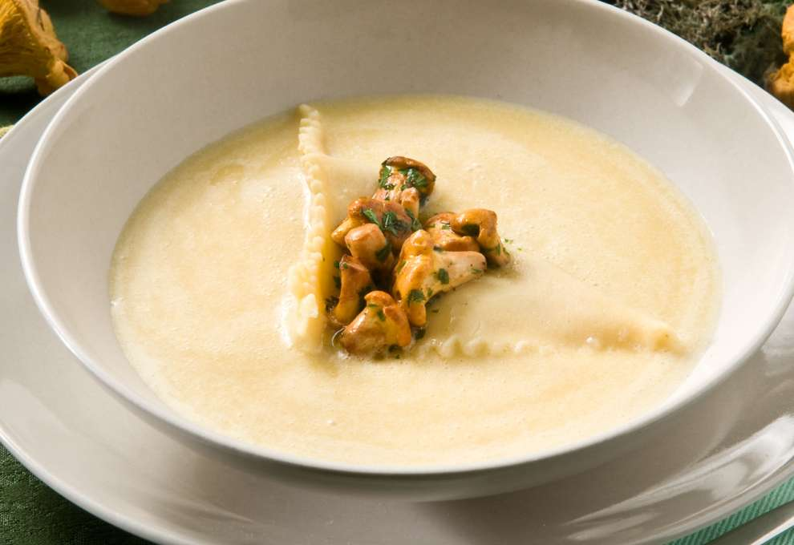
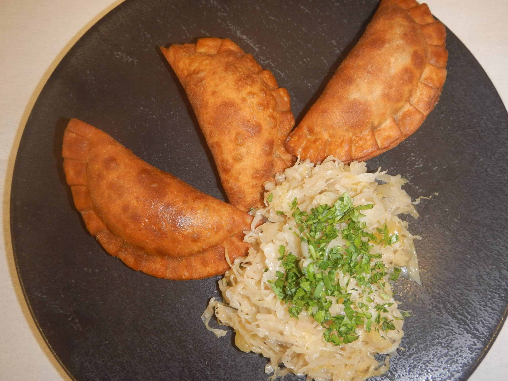
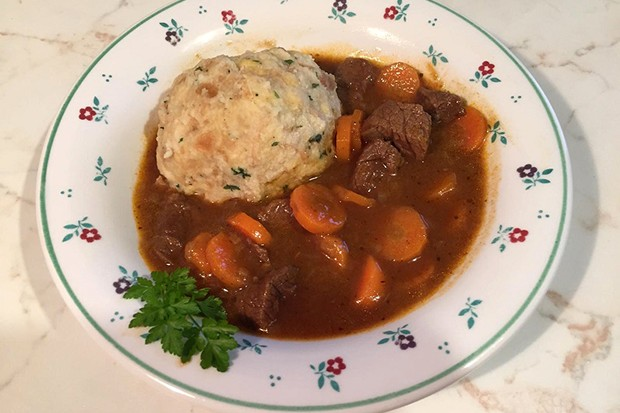
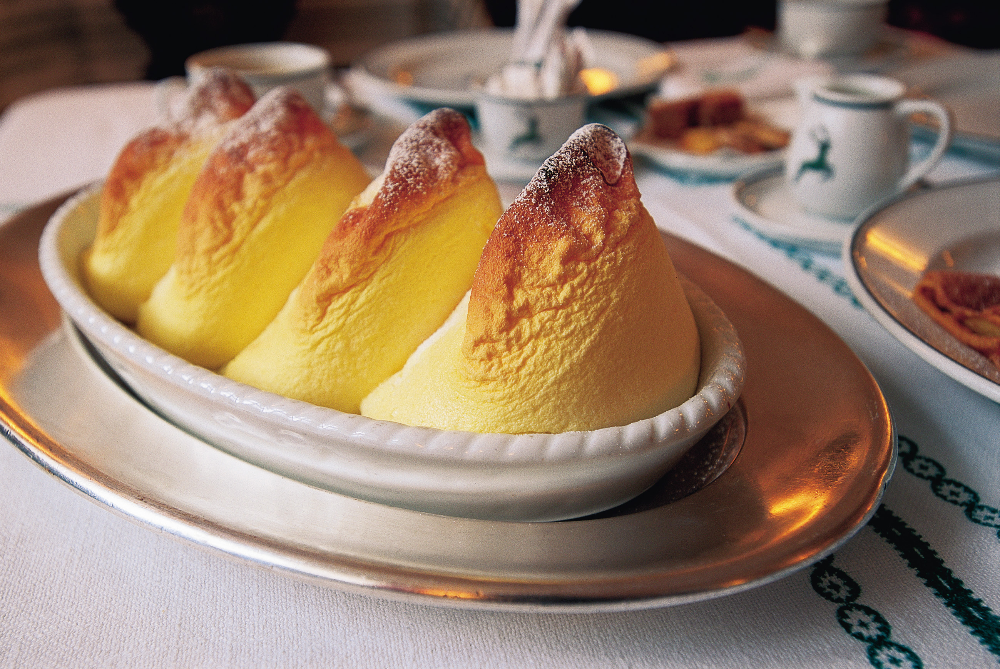
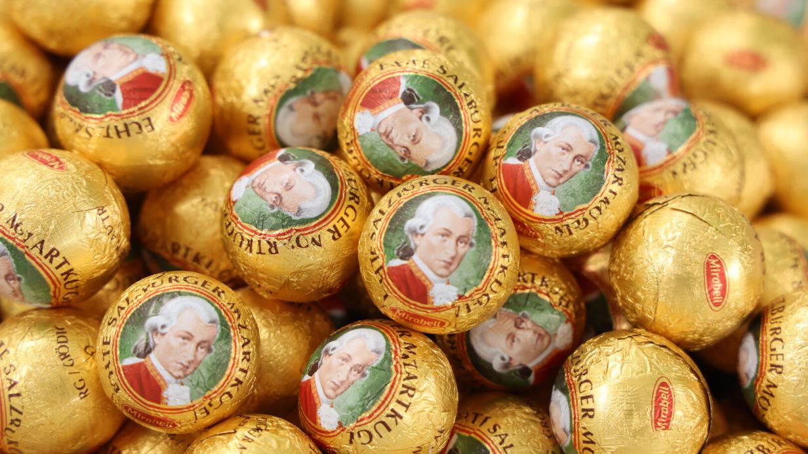
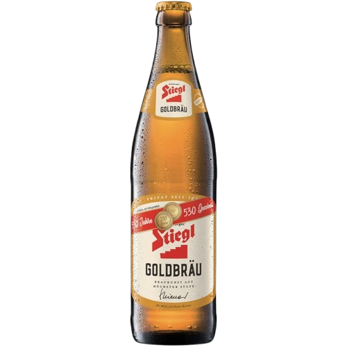
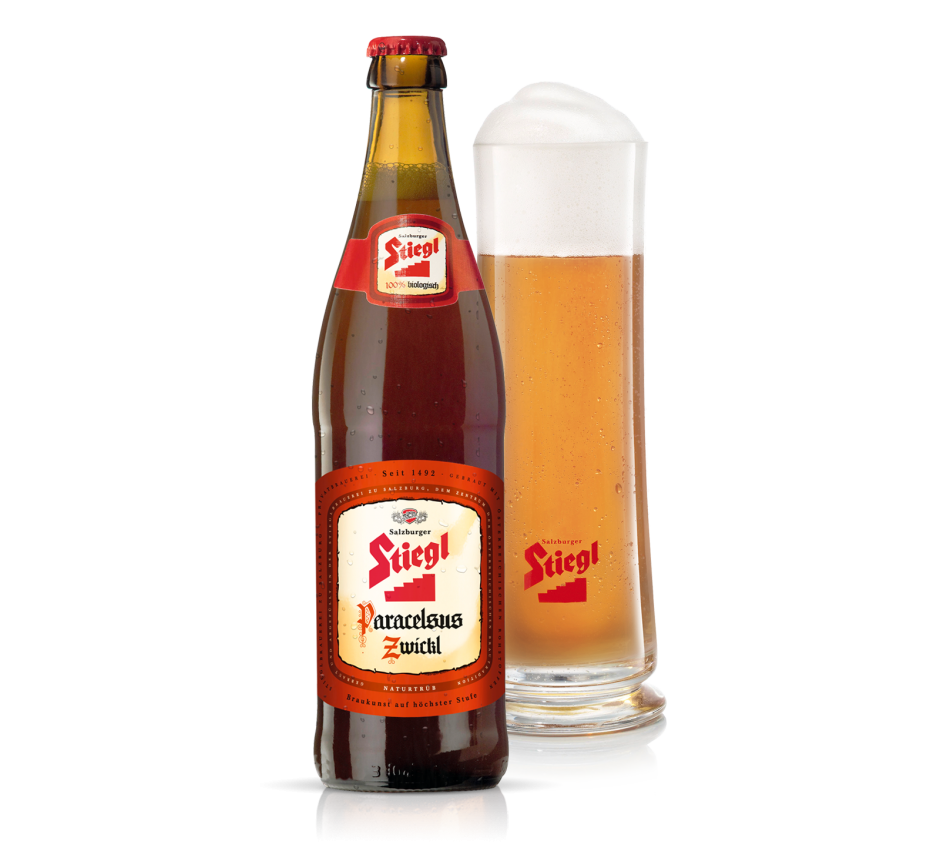

Eierschwammerlsuppe ist eine cremige Pilzsuppe aus frischen Eierschwammerln, verfeinert mit Zwiebeln, Knoblauch, Sahne und frischen Kräutern, die besonders in Salzburg geschätzt wird.
Gasteiner Fleischkrapfen sind gefüllte Teigtaschen, meist mit einer Mischung aus Rind- oder Schweinefleisch, die oft mit Sauerkraut serviert werden.
Rindfleisch, das in Bier geschmort wird, und oft mit Kartoffeln oder Semmelknödeln serviert wird.
Eine luftige Süßspeise aus Eiweiß, Zucker und Mehl, die mit Puderzucker bestreut und warm serviert wird.
Ein mit Marzipan und Pistazien gefülltes Schokoladenkonfekt, das nach dem berühmten Komponisten Wolfgang Amadeus Mozart benannt ist.
Ein klassisches, vollmundiges Lagerbier mit einer dezenten Hopfennote, hergestellt von der ältesten Privatbrauerei in Österreich, Stiegl.
Ein naturtrübes, unfiltriertes Bier mit einem kräftigen und würzigen Geschmack, ebenfalls von Stiegl gebraut.
